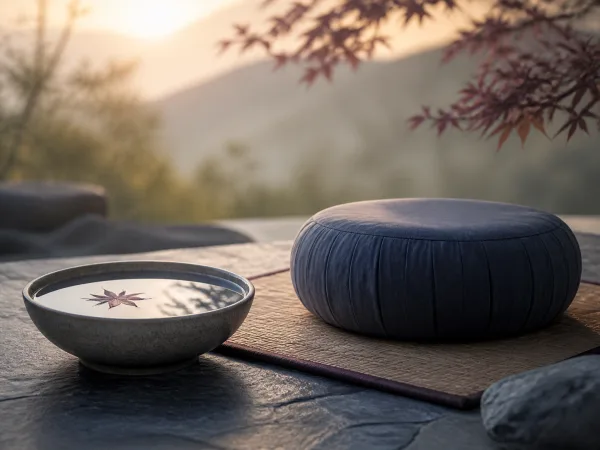

01
Lukhang Temple Restoration
Help recreate the Dalai Lama’s Secret Temple and its sacred murals - precious supports for our lineage and practice, preserved for this and future generations.
At a time when earth and humanity are under increasing pressure, your gift helps preserve sacred art, bring clear teachings to more people, and support those on long retreat.
Donations are not tax deductible. We appreciate your kindness and generosity.
Every contribution, of any size, goes directly toward preserving this lineage and making the teachings available to those who need them.
Help recreate the Dalai Lama’s Secret Temple and its sacred murals - precious supports for our lineage and practice, preserved for this and future generations.

Bring clear and compassionate Buddhist and mindfulness meditation instruction to all, through live classes, retreats, and learning programs.
Help those in financial need attend meditation and mindfulness classes and retreats, in person and online, to create greater peace and meaning in their lives.
Support our long-term Three Year Retreat Community, now completing their second year of intensive practice day and night for the benefit of all beings.
Also please note: donations are not tax deductible. We appreciate your kindness and generosity in helping us achieve these goals.
Donate Now Become a Member InsteadChoose the amount that feels right for you. Your gift is processed securely by PayPal - no account required to give as a guest.
You'll be taken to PayPal to choose your amount and complete your gift securely. Donations are not tax deductible.
We appreciate your kindness and generosity in helping us achieve these goals.
Vajragarbha & Pemako Retreat Center
Questions about giving? Email info@dzogchenteaching.com.No. Donations to Vajragarbha are not tax deductible. We're grateful for your generosity all the same.
Yes - consider becoming a monthly Sangha member, which sustains the teachers, community, and scholarships while giving you full access to the teaching path.
Gifts support the Lukhang Temple restoration, free and low-cost online education, financial accessibility for students in need, and our Three Year Retreat Community.
No. PayPal allows you to give securely as a guest with a debit or credit card, no account required.
Whatever you're able to give helps preserve this lineage and bring these teachings to more people.